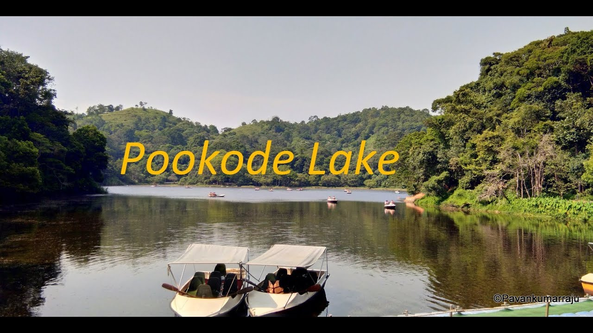

Explore Wayanad


Wayanad District came into existence on 1st November, 1980 as the 12th District of Kerala consisting of Mananthavady, Sulthanbathery and Vythiri Taluks. The name Wayanad is derived from Vayal Nadu which means the land of paddy fields. It is a picturesque plateau situated at a height between 700 meters and 2100 meters above the mean sea level nested among the mountains of the Western Ghats on the Eastern portion of North Kerala and on the sides of Tamil Nadu and Karnataka States. The District was carved out from the then Kozhikode and Kannur Districts. About 885.92 sq.km of area is under forest. The culture of Wayanad is mainly tribal oriented. Though considered as backward, this District is perhaps one of the biggest foreign exchange earners of the State, with its production of cash crops like pepper,cardamom, coffee, tea, spices and other condiments.